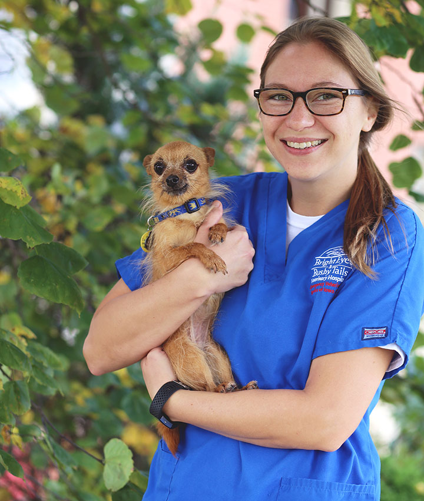
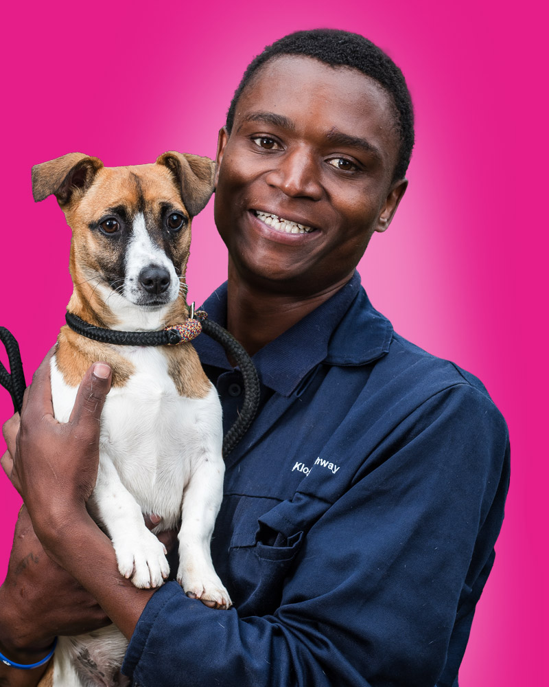
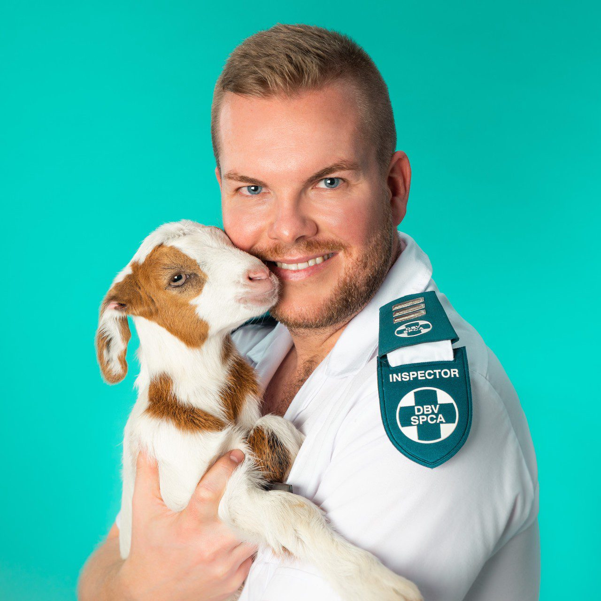

About the SPCA
History and Role in South AfricaThe SPCA started in England in 1824. It expanded globally and in 1872, opened in South Africa. The first hospital opened in 1920 and cared for pets, wildlife and farm animals. Today, the SPCA offers veterinary, rescue and education services. Mission and VisionThe SPCA's mission is to prevent cruelty and promote kindness towards animals. Our vision is to create a world where animals are treated with respect and are safe. We strive to remove animals from neglect and abuse, educate communities on compassionate animal care, provide medical care and sterilization, uphold animal laws and ensure animals are fed and live freely without pain or fear. |

|
Meet Our Team
|
Mqabuko Moyo Ndukwana |
 Megan Reid |
|
 Keagan Wolfaardt |
 Jaco Pieterse |